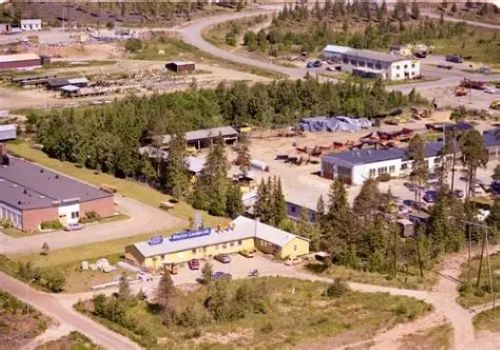
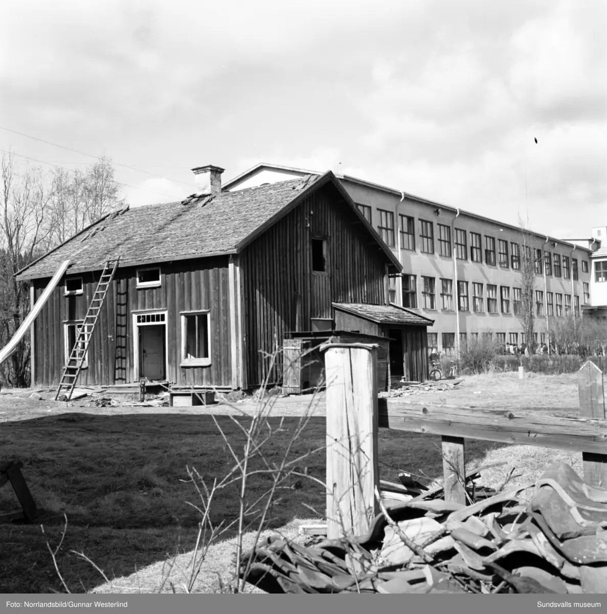

Timrå

Timrå är ett samhälle som är centralort i Timrå kommun i Medelpad och Västernorrlands län. Samhället var till 2023 av SCB klassat som en separat tätort för att 2023 klassas som en del av tätorten Sundsvall och Timrå. En betydande andel av befolkningen arbetar i Sundsvalls kommun och vistas där regelbundet, vilket innebär att Timrå kan anses vara en förort till Sundsvall.
Historia

Namnet "Timrå" har funnits minst sedan 1400-talet då Timrå församling bildades. Kyrkan kom att byggas nedanför Näsberget strax söder om tätortens nutida huvudcentrum. Detta område var förr sankt och gyttjigt, men har under årens lopp dränerats och blivit beboeligt.
Sport
Timrå har många idrottsanläggningar i förhållande till sin storlek. I SCA Arena spelar ishockeyklubben Timrå IK vars A-herrlag ofta spelat i Sveriges högsta liga sedan säsongen 1956-1957.
Timrå IK är en ishockeyklubb från Timrå i Medelpad. 1921 bildades Wifstavarfs GIF som 1929 införlivades med Wifstavarvs IK grundat 11 maj 1928. Den 11 oktober 1937 bildade föreningen en ishockeysektion och 1956 skedde debuten i den högsta serien.